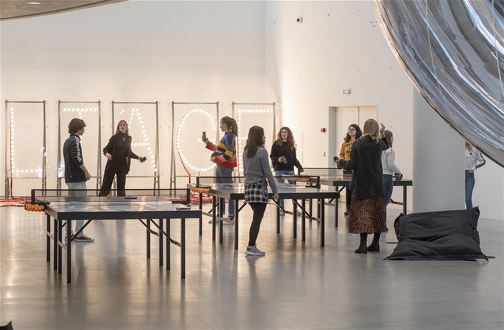
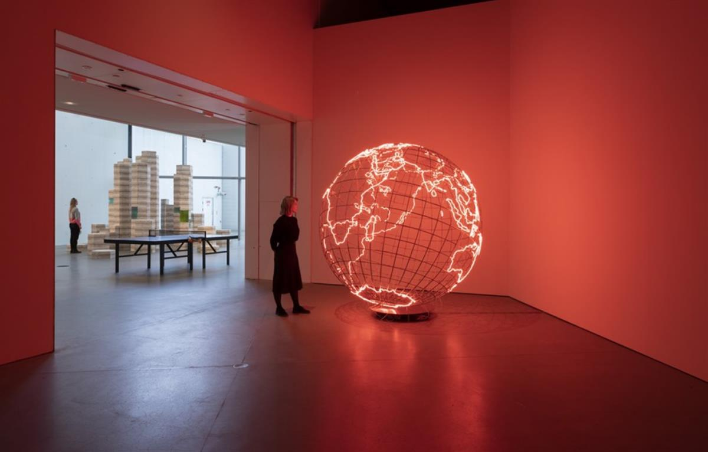
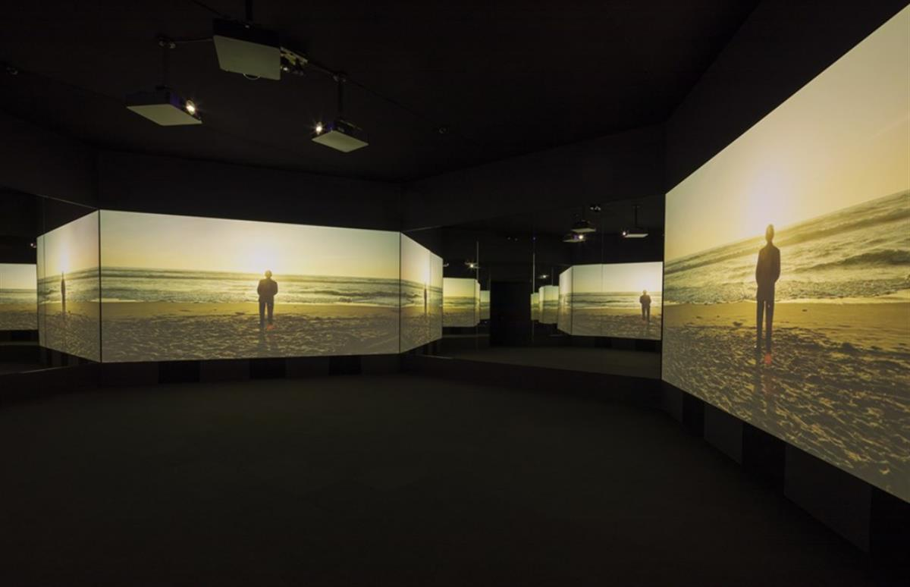
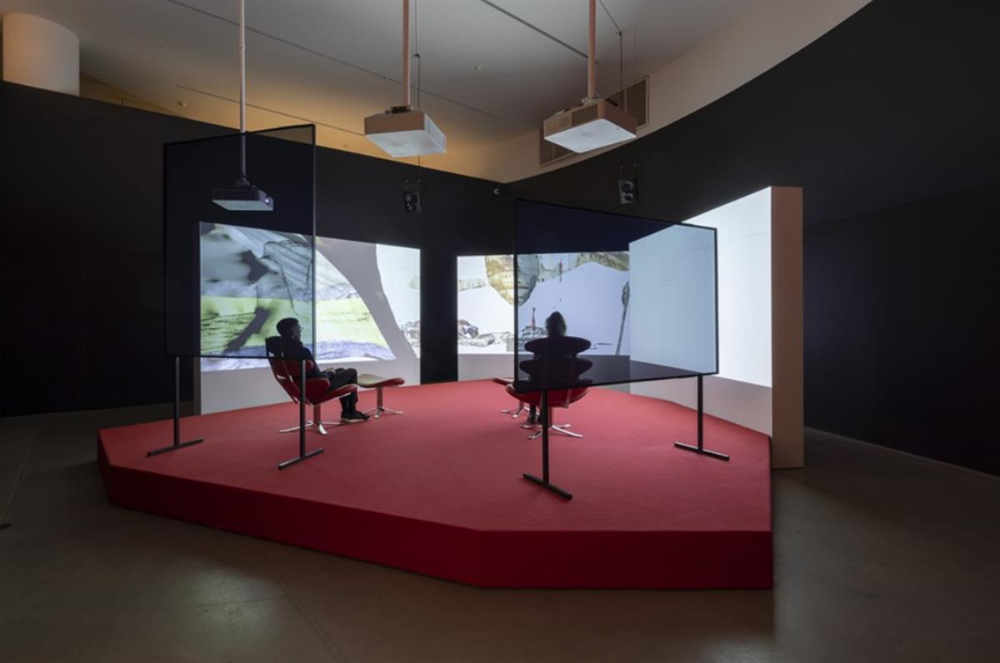

“Tomorrow is the Question”, installation photo. Photo: Anders Sune Berg
★★★★★ - Børsen
★★★★★ - Århus Stiftstidende
★★★★★ - Jyllands-Posten
★★★★ - Kristeligt Dagblad
Tomorrow is the Question
The questions we ask today are instrumental in shaping tomorrow’s world. Tomorrow is the Questionfocuses on our common future. A group exhibition of international contemporary art eliciting reflection and discussion of present and future challenges.
Play a game of table tennis, see a red-hot globe, allow yourself to be cleansed by an all-enveloping interactive waterfall. ARoS’ first temporary exhibition in 2019 shows how it is possible, using art as a facilitator and catalyst, to highlight the biggest and most complex issues facing our time. The exhibition takes as its point of departure the UN’s seventeen Sustainable Development Goals (SDGs) and invites the audience to reflect on the world of tomorrow.
ART 2030
Tomorrow is the Question is created in a curatorial collaboration between ARoS and Luise Faurschou and has been underway for three years. Luise Faurschou is director of the organisation ART 2030 whose goal is to link art to the SDGs. ART 2030 has been dubbed the most ambitious art project of all time by the international art platform artnet.
The exhibition presents works by fifteen international contemporary artists. A common denominator of these works is their capability, in a particularly powerful, visual, and sensuous way, to communicate the fact that we live in times of upheaval. The participating artists collectively focus on the huge challenges currently facing us in a form that gives rise to contemplation about the state of the world, calling for dialogue, innovative thinking, and collective action. Collectively, the artists represent individual voices, consistently succeeding in challenging our perception of reality and habitual thinking.

“Tomorrow is the Question”, installation photo. Photo: Anders Sune Berg
CATALOGUE
In connection with the exhibition, ARoS has published a catalogue with contributions from authors who touch on both the dark and light scenarios of the present and the future in various ways. Erlend G. Høyersten, museum director, has written an essay on the need for a mental revolution, Luise Faurschou, visiting curator, introduces the exhibition and the works of art, and Tor Nørretranders, author of popular science books, has written a philosophical and optimistic essay about the potential of tomorrow’s world. Moreover, the catalogue contains two peer-reviewed research texts, one by Nanna Bonde Thylstrup and Ulrik Ekman describing the dark side of technological developments, and one by Anette Vandsø on the environment and the Anthropocene landscape.
Tomorrow is the Question is initiated and curated by Luise Faurschou, founder and director, ART 2030 and Faurschou Art Resources, in collaboration with Erlend G. Høyersten, director, ARoS.

“Tomorrow is the Question”, installation photo. Photo: Anders Sune Berg

“Tomorrow is the Question”, installation photo. Photo: Anders Sune Berg

“Tomorrow is the Question”, installation photo. Photo: Anders Sune Berg
List of works
- Alfredo Jaar, Be Afraid of the Enormity of the Possible, 2019
- Allora & Calzadilla, 2 hose petrified Petrol Pump, 2012
- Allora & Calzadilla, The Great Silence, 2014
- Cao Fei, Rumba II: Nomad, 2015
- Doug Aitken, New Era, 2018
- Edward Burtynsky, Alberta Oil Sand #6, Fort McMurray, 2007
- Edward Burtynsky, Dampier Salt Ponds #4, Western Australia, 2007
- Edward Burtynsky, Dandora Landfill #3, Plastics Recycling, Nairobi, Kenya, 2016
- Edward Burtynsky, Dryland Farming #11, Monegros County, Aragon, Spain, 2010
- Edward Burtynsky, Pivot Irrigation #24, High Plains, Texas Panhandle, USA, 2012
- Edward Burtynsky, Rice Terraces #4, Western Yunnan Province, China, 2012
- Edward Burtynsky, Salt Pan #5, India, 2016
- Edward Burtynsky, Silver Lake Operations #1, Lake Lefroy, Western Australia, 2007
- Hito Steyerl, The Tower, 2015
- Julian Charrière, Future Fossil Spaces, 2017
- Mona Hatoum, Hot Spot, 2013
- Olafur Eliasson, The large glacier surfer, 2007
- Qiu Zhijie, Maps of Technological Ethics, 2017
- RAQS MEDIA COLLECTIVE, Revoltage, 2011
- Rirkrit Tiravanija, untitled (غداً هو السؤال) (明天才是問題) (tomorrow is the question) (morgen ist die frage) (завтра это вопрос), 2019
- Simon Denny, Centralization vs Decentralization hardware display: Fujitsu/Bitcoin/GoL 1978, 2018
- Simon Denny, Centralization vs Decentralization hardware display: DELL/Bitcoin/GoL The Haunted Mansion, 2018
- Simon Denny, Centralization vs Decentralization hardware display: IBM PureFlex/Zcash/GoL Pirates of the Caribbean Dead Man’s Chest, 2018
- Simon Denny, Crypto Futures Game of Life Overprint Collage: 1976 Vintage, 2018
- Simon Denny, Crypto Futures Game of Life Board Overprint Collage: zAPPed, 2018
- Simon Denny, Crypto Futures Game of Life Board Overprint Collage: The Haunted Mansion – Ghosts of Cryptoeconomics, 2019
- Simon Denny, What is Blockchain?, 2016
- teamLab, Universe of Water Particles, Transcending Boundaries,2017/ Flowers and People, Cannot be Controlled but Live Together, Transcending Boundaries - A Whole Year per Hour,2017
- Tomás Saraceno, Aeroke 5.3: towards an Aerocene epoch,2019